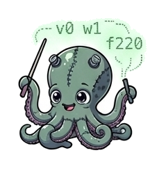

Click to watch on YouTube if my iframe is broken

This is the sound engine, pattern engine, and live coding environment for wavetable and sample-based audio synthesis that I've wanted for 40 years. It's a mess. It a mess that I really like playing with.
Click to watch on YouTube if my iframe is broken